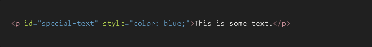
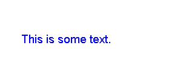
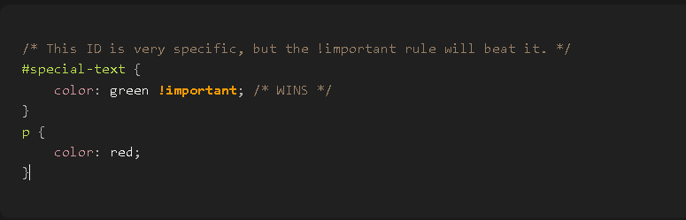
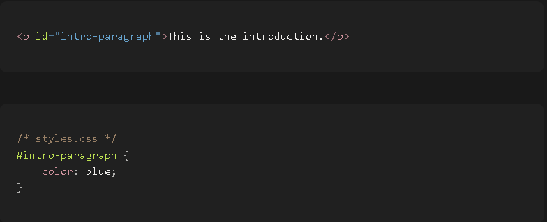
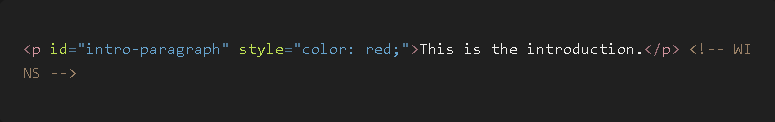
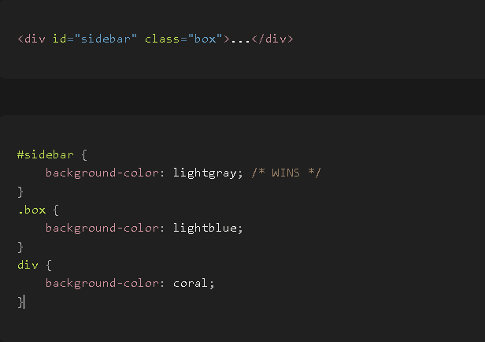
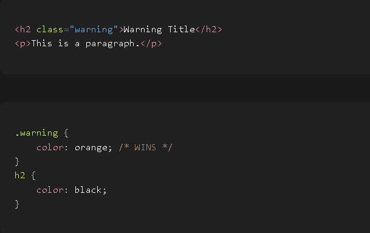
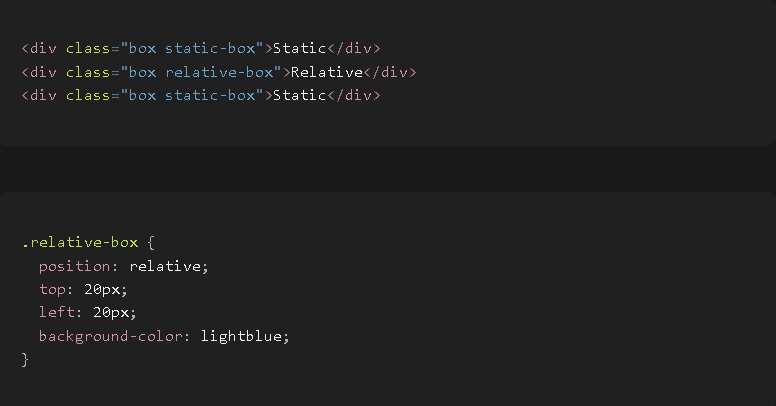
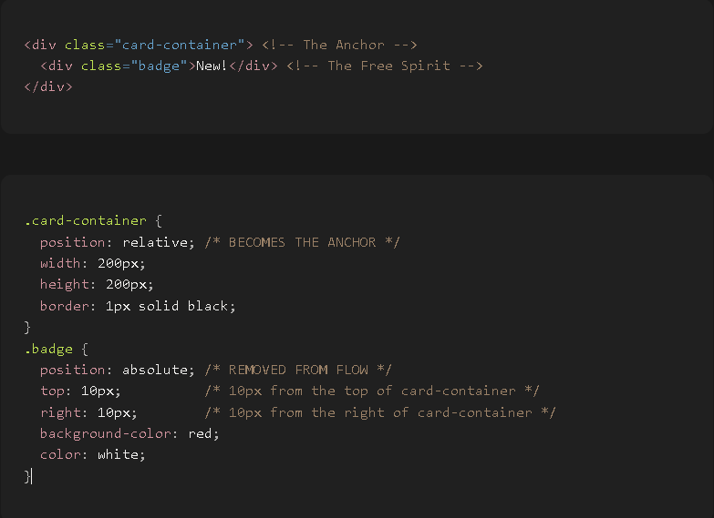
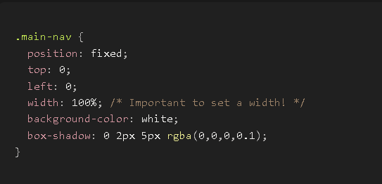

The First Principle: A web browser is a machine that needs a strict, unambiguous set of rules to operate. When multiple CSS rules try to style the same element, the browser cannot "guess" which one to use. It must follow a predictable hierarchy to determine a single winner. This hierarchy is called the Cascade.
Think of it as a series of tie-breaker rounds. If there's a winner in an early round, the later rounds are ignored.
The Problem: What if you have a very complex website, and a specific style (perhaps from an external library or a very generic rule) is overriding a style you desperately need to apply? You need an "emergency escape hatch" to break all the normal rules and force a style to win.
The Logical Solution: Create a special keyword that elevates a single style declaration to the highest possible level of importance. This is the !important flag.
How it Works: When you add !important to a style declaration, it jumps to the front of the line, beating inline styles, IDs, classes, and everything else. It is the most powerful tool in the Cascade.
Mini Example: code Html code CSS

Output


Result: The text will be green. The !important flag overrules both the inline style and the ID selector.
The Problem: How can we apply a unique style to one, and only one, specific element without having to create a new ID or class in our stylesheet? We need a way to attach a style directly to the element itself.
The Logical Solution: Allow a style attribute to be placed directly inside an HTML tag. Because this style is physically attached to the element, it is considered more specific and powerful than any rule coming from an external or internal stylesheet (unless that rule uses !important).
How it Works: The browser considers styles in the style attribute to have a higher priority than styles defined in <style> tags or linked .css files.
Mini Example: code Html code CSS code Html

Now, let's add an inline style to the HTML:

Result: The text will be red. The inline style is "closer" to the element and therefore wins against the ID selector from the stylesheet.
The Problem: We need a way to target one single, unique element on a page with a powerful and specific rule. This is for major layout components like a site header, a main content block, or a footer.
The Logical Solution: Create an id attribute, which must be unique per page. In CSS, create a corresponding selector (#) that has a very high specificity score.
How it Works: An ID selector will always beat a class selector, an element selector, or any combination of them.
Mini Example: code Html code CSS

Result: The div's background will be lightgray. The ID selector (#sidebar) is more specific than the class selector (.box) and the element selector (div).
The Problem: We need a way to apply the same style to many different elements, regardless of their tag type or position. We need a reusable "label."
The Logical Solution: Create the class attribute. In CSS, the class selector (.) is more specific than a general element selector but less specific than a unique ID.
How it Works: It beats element selectors but loses to ID selectors.
Mini Example: code Html code CSS

The most fundamental truth is that by default, every element on a webpage exists in the Normal Document Flow. This is the system where block elements stack vertically on top of each other, and inline elements flow horizontally next to each other. They respect each other's space and don't overlap.
The position property is the tool we use to remove an element from this normal flow and give it special positioning rules.
The First Principle: Every element needs a default positioning behavior.
What it means: "This element should behave completely normally."
How it works: This is the default value for every single element. An element with position: static is not "positioned" in a special way. It simply exists in the normal document flow.
The Critical Rule: The positioning properties top, right, bottom, left, and z-index have absolutely no effect on a static element. They are ignored.
When to use it: You almost never explicitly write position: static;. You use it primarily to undo a different position value. For example, you might have an element that is position: fixed on desktop but you want to return
it to normal flow on mobile, so you'd set it to position: static in a media query.
The First Principle: We need a way to slightly adjust an element's position without disrupting the layout of the elements around it. We also need a way to create a "positioning context" for other, more advanced elements.
What it means: "This element is now a candidate for being moved, and it will also become a positioning anchor for its children."
How it works (Two Key Behaviors):
It can be moved: Once you set position: relative;, you can now use the properties top, right, bottom, and left to nudge it from its original spot. For example, top: 20px; will move it 20px down from where it would have been. left: 30px; will move it 30px to the right.
It preserves its original space: This is the most important part. Even after you move the element, the space it would have occupied in the normal flow is still reserved for it. The other elements on the page are not affected and do not reflow to fill the gap.
The Most Important Use Case (The Anchor): A relative element becomes the positioning context for any of its descendant elements that are position: absolute. This is the single most common and important use of position: relative. We will see this in the next section.
Mini Example: code Html code CSS

The First Principle: We need a way to completely remove an element from the normal document flow and position it precisely relative to an ancestor element.
What it means: "This element is now a free-floating layer. Ignore all its siblings and position it according to its nearest 'positioned' ancestor."
How it works:
Removed from the Flow: The element is completely removed from the normal flow. The space it occupied vanishes, and other elements will reflow to fill that gap as if it never existed.
Finds its Anchor: The element will look up its family tree (its parent, its grandparent, etc.) for the nearest ancestor that has a position value other than static (i.e., relative, absolute, fixed, or sticky).
Positions Itself: It will then use the top, right, bottom, and left properties to position itself relative to the padding edge of that "positioned" ancestor.
The Fallback: If it finds no positioned ancestor, it will position itself relative to the initial containing block, which is usually the
or element (the viewport).The "Relative-Absolute" Pattern (CRITICAL): code Html code CSS
The most common design pattern in all of CSS is to create a wrapper <div> with position: relative; and then place a child <div> inside it with position: absolute;.

The First Principle: We need a way to position an element relative to the browser window itself, and make it stay there even when the user scrolls the page.
What it means: "This element is now glued to the screen (the viewport)."
How it works:
Removed from the Flow: Just like absolute, the element is completely removed from the normal document flow, and the space it occupied vanishes.
Positions Itself Relative to the Viewport: It always uses the browser window as its positioning context. The top, right, bottom, and left properties position it relative to the edges of the screen.
Ignores Scrolling: The element does not move when the user scrolls the page.
Common Use Cases:
"Stuck" navigation bars at the top of the screen (top: 0; left: 0;).
"Back to Top" buttons (bottom: 20px; right: 20px;).
Cookie consent banners.
Mini Example: code CSS

The First Principle: fixed is useful, but what if we want an element to behave normally until it hits a certain point, and then become fixed?
What it means: "Behave like relative until you are scrolled past a certain point, then behave like fixed."
How it works:
Starts as Relative: The element starts in the normal document flow, behaving like a position: relative element. It scrolls with the page.
The Threshold: You must provide a threshold with top, right, bottom, or left. For example, top: 0;.
Becomes Fixed: As the user scrolls down, the moment the top of the sticky element is about to be scrolled off the top of the viewport, it "sticks" to that top: 0; position and behaves like position: fixed.
Becomes Relative Again: If the user scrolls back up past that point, it "un-sticks" and returns to its normal position in the flow.
Common Use Cases: